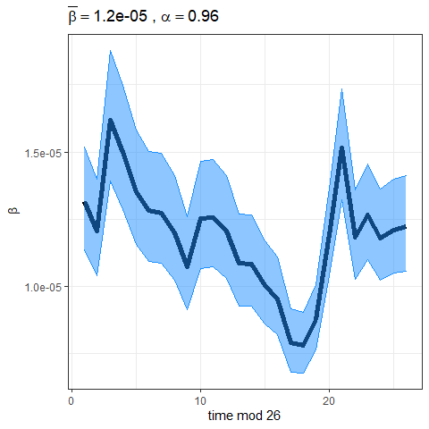
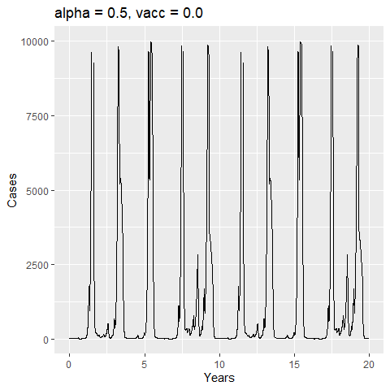
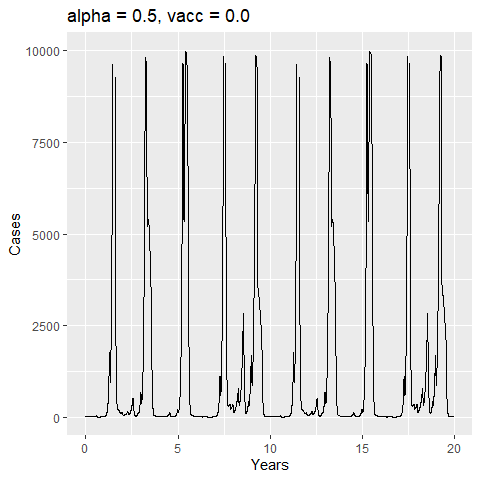

9 Seasonality and Measles Epidemics
9.1 Measles data and challenge
You have been asked to implement a determinsitic model to predict the impact of vaccination on the timing of outbreaks of measles in London. You have been asked to make a number of assumptions to proceed:
- Constant population size of 3.3 million
- Birth rate of 20 per thousand per year
- Basic reproduction number \(R_{0} = 17\) (for sinusoidal forcing model)
- Cases can be approximately calculated from the number of infectives by multiplying by 7/5 (i.e. reporting period /average infectious period)
You were provided with a time-series of measles cases from London from 1950-1964 (immediately prior to the introduction of vaccination in the UK) and asked to assume that the reporting rate at this time was 40%.
These data are included as part of the tsiR package in R that provides historical time-series data from England and Wales along with functions to work with the so-called time-series SIR model (TSIR) - a discrete time chain binomial model that can be used to very successfully model and predict measles dynamics (and to a lesser extent other strongly immunizing childhood infections).
The “plotdata” function from the tsiR package provides a summary of the incidence and demographic data (birth rates and population size):

As you can see, our simplifying assumption of fixed birth and population size glosses over the “baby boom” post WWII that pushed the typical two-year cycle of measles epidemics into annual outbreaks and led (along with migration) to an increase in the population size. The TSIR model can be used to estimate the seasonal variation in transmission rates presented in the background slides (on which we overlay the typical pattern of school terms in England and Wales calculated by the mk_terms function below):
## alpha mean beta mean rho mean sus
## 9.60e-01 1.19e-05 4.57e-01 1.14e+05
## prop. init. sus. prop. init. inf.
## 3.01e-02 6.12e-05
Important to note that the estimated transmission parameters from the TSIR model do not translate directly to the transmission parameters for continuous-time (ordinary differential or stochastic) models. The qualitative pattern is informative rather than the specific estimates. (Conceptually I would consider these estimates to be closer to reproduction numbers than transmission rates as they are usually presented.). Note alsoe that the \(\alpha\) used in the TSIR model is not an amplitude of seasonality but a correction (i.e. fudge) factor for the density dependence of the transmission term which - in some sense - can be used to adjust for artificts arising from the discrete time approximation.
We also provided you with hope-simpon’s estimates of the serial interval of measles and illustrated that it suggests that the latent and infectious periods of measles are less dispersed (less variable) than exponential and well described by a gamma distribution where the shape and scale parameters are approximately equal:

9.2 Standard SEIR (exponential) with sinusoidal forcing
We first present an implementation of the standard SEIR model - withc constant rates of progression through the latent and infectious compartments - and sinusoidal forcing term. The basic template here is similar to what you have seen before in earlier practicals except that the transmission rate now depends on the time. Here we wrote a wrapper function which set’s some sensible default initial conditions (the fixed points of the unforced SEIR model where \(\alpha=0.0\)) and then runs the model for three periods. No matter the inital model conditions the seasonally forced SEIR model will eventually converge towards a stable dynamic behaviour (often described as an “attractor” in analogy to the fixed points of an unforced model). We can run the model for a “burn-in” period (analogous to the same concept for MCMC convergence) to remove this “transient” behaviour. Our function solves the model for three periods. We forward-simulate the initial conditions for “burnin” years discarding the results but using the final state to set the initial conditions for a run of “prevacc” years. We then adjust the birth rate to model vaccination at birth and then run for an additional postvacc years, returning a tibble with the sampling times and state variables of the model:
Using the suggested parameter values you should find that a seasonal forcing of \(\alpha = 0.19\) gives a reasonable qualitative fit to the two year cycle of measles oubtreaks seen in London after 1950:


For sinusoidal forcing the bifurcation to two-yearly cycles occurs for a very small amount of seasonal forcing (\(\alpha \sim 0.02\)) with the amplitude of the two-year cycle increasing with increasing \(\alpha\) before further bifurcations to three, four and irregular multiannual cycles.
If we now examine the effect of increasing vaccination coverage we see that at low coverage vaccination progressively increases the time between outbreaks - shifting cycles to 3,4 and higher (irregular cycles). However, the incidence between outbreaks now falls to unrealistically low levels (nano-scale number of infectives!) - highlighting the likely increased importance of stochastic effects after the introduction of vaccination.


9.3 Standard SEIR (exponential) with term-time forcing
We now adapt the previous code to use a term-time forcing function and run the same model scenarios:
The term-time forcing function leads to a very different (and richer) bifurcation structure. Indeed, if you tried this form of the model you likely could not find values of \(\alpha\) that gave a reasonable match to the London time-series for the assumed parameter values. Reducing the assumed value of \(R_{0}\) to 12 you can achieve a comparable fit (arguably better with respect to the qualitative shape of the attractor).
 

We see the same qualiative impact of vaccination as before, but note that the higher troughs in prevalence between major outbreaks predicted by the term-time forcing model mean that stable (and plausible in terms of depth of trough between outbreaks) dynamics are seen for a wider range of birth/vaccination rates:


9.4 Gamma SEIR with term-time forcing
Finally, we present an implementation of the term-time forcing model with realistic (gamma) distributed latent and infectious periods. The Gamma-SEIR model is much more sensitive to changes in the forcing amplitude \(\alpha\) requiring lower amplitudes to generate the same qualitative dynamics as the (less biologically accurate) standard model with constant rates. These models are even more difficult to work with numerically and presented here purely for completeness and a cautionary note on the extent to which these model assumptions impact on the range of model parameters that will be consistent with real data. This sensitivity - and strong tradeoffs between transmission rates, birth rates and distributional assumptions makes this type of model particular problematic (and therefore particulary interesting) to perform inference with.